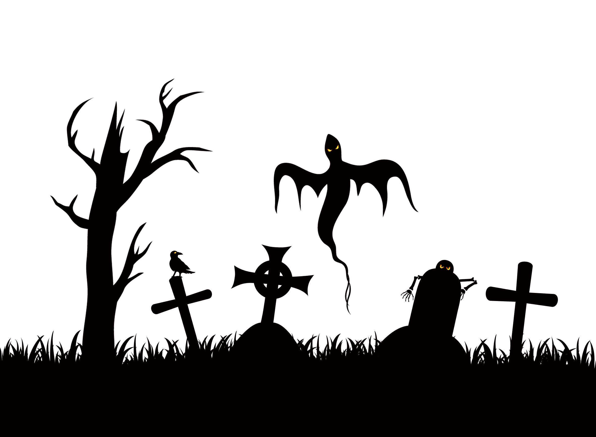

Halloween, ou Dia das Bruxas, é uma celebração popular de culto aos mortos comemorada anualmente no dia 31 de outubro. O termo tem origem na expressão em inglês “All Hallow’s Eve” (Véspera de Todos os Santos), pois é comemorado um dia antes do feriado de 01 de novembro. A cultura de celebração do Halloween é muito forte em países de língua anglo-saxônica, sobretudo nos Estados Unidos. Com o tempo, o feriado ganhou popularidade e hoje é comemorado, ainda que em menor escala, em grande parte do mundo. A tradição do Halloween foi levada pelos irlandeses aos Estados Unidos, onde a data é considerada feriado.
Acredita-se que a maioria das tradições de Halloween tenham se originado nos antigos festivais celtas chamados Samhaim, que marcavam a passagem de ano e a chegada do inverno. Para os celtas, o início do inverno representava a aproximação entre o mundo e o “Outro Mundo”, onde vivem os mortos. Os celtas acreditavam que no início do inverno os mortos regressavam para visitar suas casas e que assombrações surgiam para amaldiçoar seus animais e suas colheitas. Todos os símbolos que hoje são característicos do Halloween eram formas utilizadas pelos celtas para afastar esses maus espíritos. A cerimônia marcava o fim do verão e início dos dias escuros do inverno. Os celtas acreditavam que nessa época os espíritos visitavam este mundo e, para afastá-los, acendiam fogueiras, lanternas e tochas. Embora de origem pagã, o Halloween recebeu esse nome após ser cristianizado pela Igreja Católica, que passou a defini-lo como véspera do Dia de Todos os Santos.
A maioria dos símbolos característicos do Halloween possuem origem nos primórdios da tradição, enquanto outros foram agregados com o tempo. Entre os principais estão:
As cores laranja e preto: O Halloween é associado com as cores laranja e preto pois o festival do Samhaim era comemorado no início do outono, quando as folhas se tornam laranjas e os dias são mais escuros.
As cores laranja e preto: a lanterna de abóbora (do inglês Jack o’lantern) tem origem em um conto celta sobre um rapaz que foi proibido de entrar no céu e no inferno e vaga eternamente com sua lanterna em busca de descanso.
A tradição de entalhar abóboras teve início nos Estados Unidos. Antes, os países de origem celta entalhavam nabos e inseriam velas no interior com o objetivo de afastar espíritos.
A tradição dos celtas de inserir velas em nabos ocos foi levada para os Estados Unidos, onde as abóboras grandes e macias se tornaram a melhor opção. O costume, que antes se limitava a entalhar rostos nas abóboras, atualmente envolve diversos formatos.
Máscaras e fantasias: os celtas acreditavam que no dia do Samhaim, máscaras e fantasias ajudavam a enganar os espíritos, que não reconheciam os humanos e continuavam vagando pelo mundo sem incomodar.
Atualmente, o Halloween é fortemente marcado por festas à fantasia que geralmente seguem a temática sombria de bruxas, zumbis, esqueletos, etc. No entanto, em países onde a tradição não é tão seguida (a exemplo do Brasil), as festas costumam envolver qualquer tipo de fantasia.
Esqueletos e fantasmas: para os celtas, os mortos assumiam, entre outras formas, a de esqueletos e fantasmas.
Morcegos: os festivais de Samhaim sempre envolviam o uso de fogueiras, que acabavam por atrair morcegos.
Gostosuras e travessuras: do inglês trick or treat, teve origem na Grã-Bretanha mas foi popularizado nos Estados Unidos nos anos 50. A atividade é voltada para crianças que, fantasiadas, batem de porta em porta perguntando “gostosuras ou travessuras?”. Caso a pessoa não dê algum brinde como doces ou dinheiro, as crianças fazem alguma travessura na sua casa.
Fonte: https://www.significados.com.br/halloween/ 